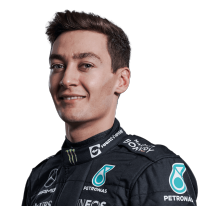

Idei versenyzők
Összesen 20 versenyző van. Minden csapathoz két versenyző tartozik. Bal oldali oszlopban a csapatok neve szerepel, középen a versenyzők neve és egy kis információ róluk, bal oldalt pedig a portréjuk.
| Csapat |
Versenyző |
Kép |
| Mercedes |
Sir Lewis Carl Davidson Hamilton, (Stevenage, Hertfordshire, 1985. január 7. –) brit autóversenyző, hétszeres Formula–1-es világbajnok. Ő az első a sportág történetében aki elérte a 100-as álomhatárt a pole pozíciók és a futamgyőzelmek tekintetében. |
 |
| Mercedes |
George William Russell(King's Lynn , 1998. február 15. –) brit autóversenyző, a 2017-es GP3-szezon és a 2018-as Formula–2 szezon bajnoka. 2019-től három szezonon át a Williams, majd 2022-től a Mercedes Formula–1-es csapatának versenyzője. |
 |
| Red Bull |
Max Emilian Verstappen (Hasselt, 1997. szeptember 30. –) belga-holland születésű holland autóversenyző, a Formula–1-ben szereplő Red Bull Racing pilótája. A 2021-es év világbajnoka, minden idők legfiatalabb Formula–1-es dobogósa, és futamgyőztese. |
 |
| Red Bull |
Sergio Pérez (Guadalajara, 1990. január 26. –) mexikói autóversenyző. 2011-től 2012-ig a Sauber Motorsport versenyzője volt a Formula–1-es világbajnokságon.2013-ban a McLarennél folytatta pályafutását, 2014-től 2018-ig a Force India pilótája volt. 2019-től 2020-ig a Racing Point F1 Team pilótája. 2021-től Max Verstappen csapattársa a Red Bullnál. |
 |
| Ferrari |
Charles Leclerc (Monte-Carlo, 1997. október 16. –) monacói autóversenyző. A 2016-os GP3-szezon és a 2017-es FIA Formula–2 szezon bajnoka. 2018-ban az Alfa Romeo Sauber csapat pilótájaként szerepelt először a Formula–1-ben. 2019-től a Scuderia Ferrari versenyzője |
 |
| Ferrari |
Carlos Sainz Vázquez de Castro, becenevén Carlos Sainz Jr.(Madrid, 1994. szeptember 1. –) spanyol autóversenyző, Formula–1-es pilóta, a kétszeres rali-világbajnok, Carlos Sainz fia. |
 |
| McLaren |
Daniel Joseph Ricciardo (Perth, 1989. július 1. –) olasz származású ausztrál autóversenyző, Formula–1-es pilóta. A 2011-es Formula–1 világbajnokságban a Hispania Racing F1 Team versenyzője volt, 2012-től a Scuderia Toro Rosso színeiben folytatta pályafutását. 2014-ben a Red Bullhoz igazolt. 2019-től a Renault csapatának versenyzője. 2021-től a McLarennél folytatta pályafutását. |
 |
| McLaren |
Lando Norris(Bristol, 1999. november 13. –) brit autóversenyző, aki a 2016-os Formula Renault 2.0 Európa-kupa és a 2017-es Formula–3 Európa-bajnokság győztes pilótája, és a 2018-as FIA Formula–2 szezon második helyezettje. Jelenleg a McLaren versenyzője a Formula–1-ben |
 |
| Alpine |
Fernando Alonso Díaz(Oviedo, 1981. július 29. –) spanyol autóversenyző, 2005, valamint 2006 Formula–1-es világbajnoka, egyben az eddigi harmadik legfiatalabb (Sebastian Vettel és Lewis Hamilton után) és egyetlen spanyol nemzetiségű Formula–1-es világbajnok. A 2018-as és a 2019-es Le Mans-i 24 órás verseny, valamint a 2019-es Daytonai 24 órás verseny győztese. |
 |
| Alpine |
Esteban José Jean-Pierre Ocon-Khelfane vagy röviden csak Esteban Ocon (Évreux, 1996. szeptember 17. –) francia autóversenyző, a Mercedes nevelőprogramjának tagja. 2014-ben bemutatkozott a Formula–1-ben, a Lotus csapat színeiben az abu-dzabi nagydíj első szabadedzésén. |
 |
| AlphaTauri |
Pierre Gasly (Rouen, 1996. február 7. –) francia autóversenyző, a 2014-es Formula Renault 3.5 második helyezettje, a 2016-os GP2-szezon bajnoka. 2017-ben a Super Formula sorozatban is a másodikként zárt összetettben. 2019-ben a Red Bull Racing versenyzője volt, de gyenge teljesítménye miatt vissza kellett térnie a Toro Rossóhoz. |
 |
| AlphaTauri |
Cunoda Júki (japánul: 角田 裕毅; 2000. május 11.–) japán autóversenyző, aki jelenleg a Red Bull Junior Team és a Honda Formula Dream Project tagja. 2020-ban a FIA Formula-2-es szezonjában a harmadik helyen végzett, majd 2021-ben debütált a Formula–1-ben mint az AlphaTauri csapat versenyzője. |
 |
| Williams |
Nicholas Latifi (Toronto, 1995. június 29. –) iráni-kanadai autóversenyző, 2020-tól a Williams Formula–1-es csapatának versenyzője. |
 |
| Williams |
Alexander Albon (London, Anglia, 1996. március 23. –) brit-thai autóversenyző, jelenleg a Red Bull tartalékpilótája a Formula–1-ben. 2022-től a Williams versenyzője a Formula–1-ben. |
 |
| Alfa Romeo |
Csou Kuan-jü (egyszerű kínai: 周冠宇, nyugatias átírásban Guanyu Zsu, Sanghaj, Kína, 1999. május 30. –) kínai autóversenyző, a 2021-es Formula–3 Ázsia-bajnokság győztese, aki jelenleg az Alfa Romeo versenyzője a Formula–1-ben. |
 |
| Alfa Romeo |
Valtteri Viktor Bottas (Nastola, 1989. augusztus 28. –) finn autóversenyző, a Mercedes istálló pilótája a Formula–1-ben.A 2013-as évtől a csapat pilótájává lépett elő egészen a 2016-os szezon végéig, majd a visszavonult világbajnokNico Rosberg helyére szerződtette a Mercedes. A 2022-es szezontól az Alfa Romeo pilótája. |
 |
| Haas |
Kevin Jan Magnussen (Roskilde, 1992. október 5. –) dán autóversenyző, 2014-ben mutatkozott be a Formula–1-ben a McLaren csapatánál. 2017 és 2020 között a Haas csapat pilótája. 2022-től ismét a Haas csapat versenyzője. Édesapja a korábbi Formula–1-es pilóta, Jan Magnussen. |
 |
| Haas |
Mick Schumacher (Vufflens-le-Château, Vaud kanton, Svájc, 1999. március 22. –) német autóversenyző, a hétszeres Formula–1-es világbajnok Michael Schumacher fia. A 2018-as Formula–3 Európa-bajnokság, és a 2020-as FIA Formula–2 bajnokság győztese. 2021-től a Formula–1-ben szereplő a Haas csapatának versenyzője. |
 |
| Aston Martin |
Lance Stroll (Montréal, 1998. október 29. –) kanadai autóversenyző, aki korábban a Ferrari és a Williams nevelőprogramjának tagja volt. A Formula–3 Európa-bajnokság 2016-os szezonjának győztese. 2017-től 2018-ig a Williams Formula–1-es csapatának pilótája volt. A legfiatalabb versenyző lett, aki debütáló évében dobogóra állhatott. Jelenleg az Aston Martin Racing pilótája. |
 |
| Aston Martin |
Sebastian Vettel (Heppenheim, 1987. július 3. –) német autóversenyző, négyszeres Formula–1 világbajnok. Pályafutását 2006-ban a BMW Saubernél kezdte, jelenleg a Aston Martin F1-es csapat tagja. 2015-re átigazolt a Ferrarihoz. 2021-től az Aston Martin F1 pilótája, átvéve Sergio Pérez helyét, így 2021-től a kanadai Lance Stroll csapattársa. |
 |